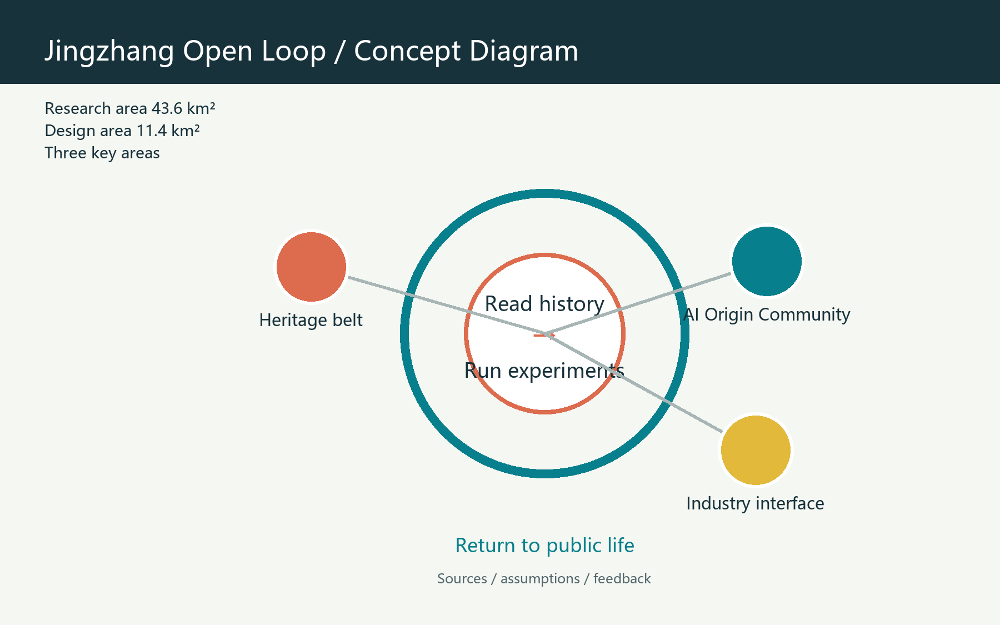
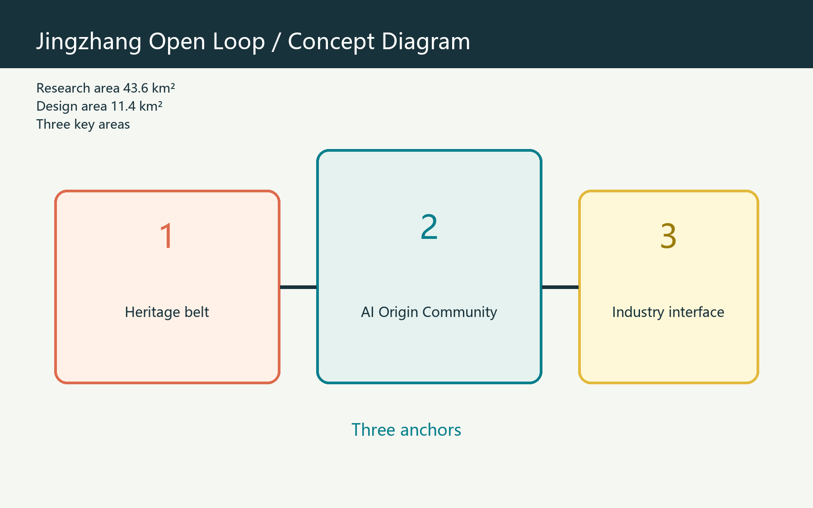
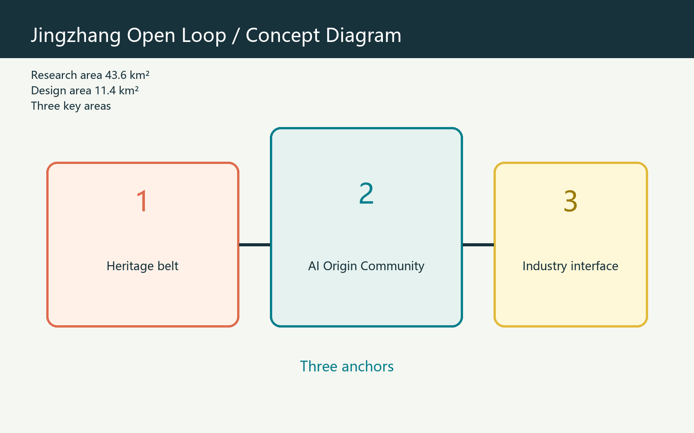
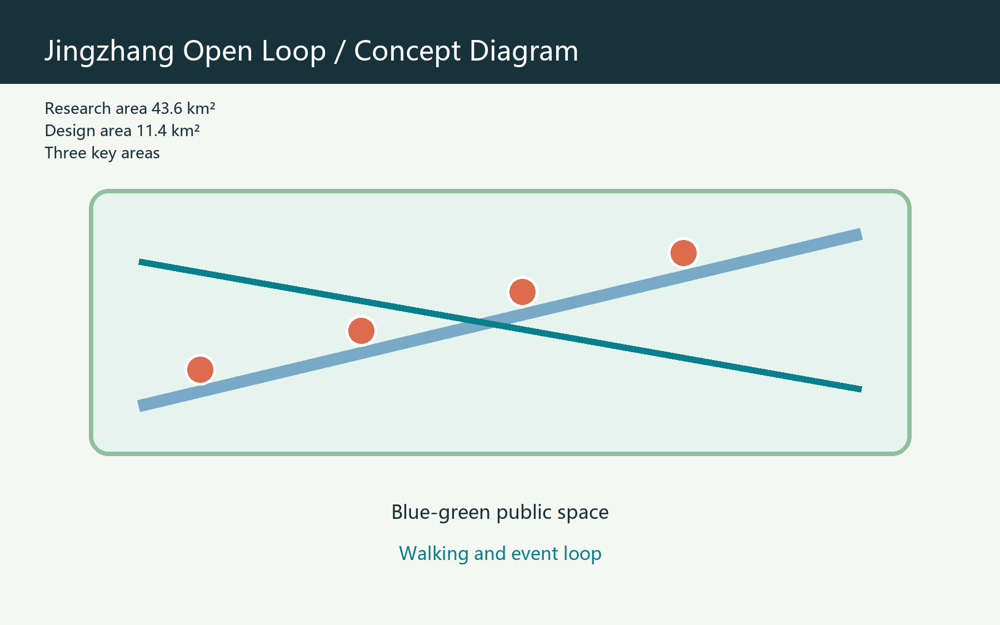
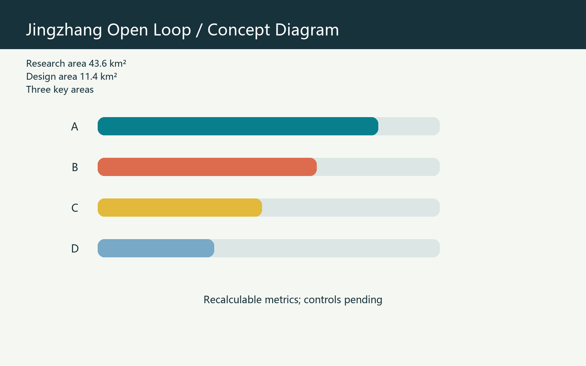

Railway heritage, source cards, and public interpretation
Current geometry is provisional discussion data, not an official redline; recalculate after official data is released.
京张开源环 / Jingzhang Open Loop
Bounded, reviewable, and opt-out AI scenarios
Return results to services, events, and next questions
核心指标 / Core Metrics
site_area_sqm11412825.386
green_ratio0.123423
public_space_ratio0.073281
任务覆盖 / Task Coverage
总览地图
Evidence is linked to the proposal, GeoJSON, metrics, matrices, and self-check.
三层范围
Evidence is linked to the proposal, GeoJSON, metrics, matrices, and self-check.
重点区域
Evidence is linked to the proposal, GeoJSON, metrics, matrices, and self-check.
用地分区
Evidence is linked to the proposal, GeoJSON, metrics, matrices, and self-check.
交通慢行
Evidence is linked to the proposal, GeoJSON, metrics, matrices, and self-check.
蓝绿公共空间
Evidence is linked to the proposal, GeoJSON, metrics, matrices, and self-check.
建筑
Evidence is linked to the proposal, GeoJSON, metrics, matrices, and self-check.
更新项目
Evidence is linked to the proposal, GeoJSON, metrics, matrices, and self-check.
AI 场景
Evidence is linked to the proposal, GeoJSON, metrics, matrices, and self-check.
核心指标
Evidence is linked to the proposal, GeoJSON, metrics, matrices, and self-check.
任务覆盖
Evidence is linked to the proposal, GeoJSON, metrics, matrices, and self-check.
自检状态
Evidence is linked to the proposal, GeoJSON, metrics, matrices, and self-check.
来源
Evidence is linked to the proposal, GeoJSON, metrics, matrices, and self-check.
假设
Evidence is linked to the proposal, GeoJSON, metrics, matrices, and self-check.
图解 / Evidence Figures




